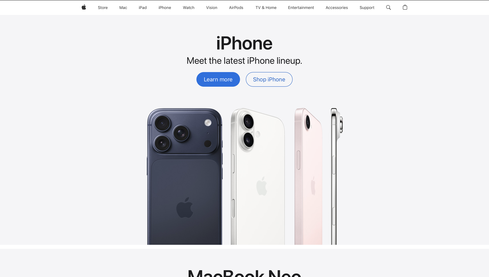

Modern Responsive Architecture
Modern design has transitioned to a philosophy of fluidity. The "Mobile-First" approach is now standard. Developers build starting with the smallest screen size and use CSS Media Queries to add complexity for desktops. This ensures a consistent brand experience across watch screens and 4K TVs.

CSS Flexbox and Grid were catalysts for this change. These models allow elements to shrink and grow based on space. Unlike the 90s, where centering an item was difficult, modern CSS makes multi-directional layouts accessible. This has allowed for creative designs that were impossible two decades ago.
Modern aesthetics prioritize whitespace to reduce cognitive load. Broadband and 5G connections allow for high-definition "hero" images and video backgrounds. Design now focuses on speed and efficiency. Using SVG graphics and web fonts keeps sites sharp and fast-loading across all devices.
Finally, modern design is rooted in Semantic HTML and accessibility. We no longer use tables for layout; we use tags like main, article, and section. This ensures screen readers can understand the site's hierarchy. Success is now measured by how easily a user can achieve goals regardless of technology.